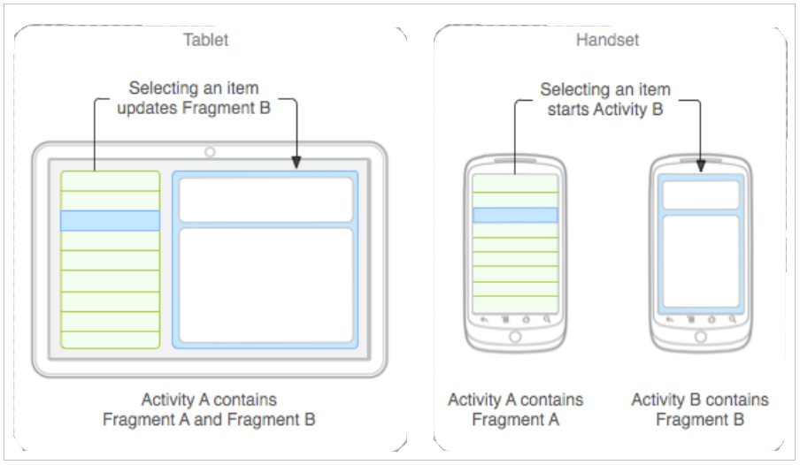
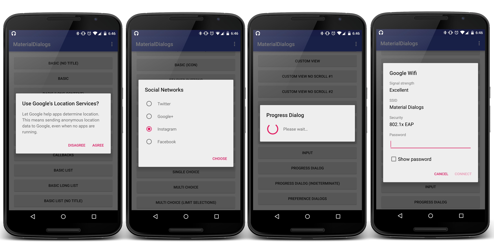
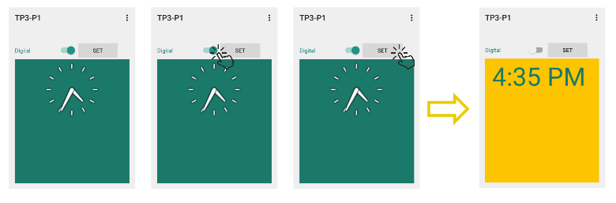

Fragments & Menus
Objectifs du TP
- Dans ce TP nous allons travailler avec les fragments et les menus.
Rappel
Fragment
Un fragment représente un comportement ou une portion d’interface utilisateur dans une activité. Il est possible de combiner plusieurs fragments dans une seule activité pour construire une interface à plusieurs panneaux, et réutiliser un fragment dans plusieurs activités. Un fragment a son propre cycle de vie, reçoit ses propres entrées et peut être ajouté, modifié ou supprimé de manière dynamique. Il est toujours inclus dans une activité, et son cycle de vie est directement affecté par celui de l’activité qui le contient. Tant que l’activité conteneur est en état d’exécution, le fragment peut être manipulé de manière indépendante (ajouté, modifié ou supprimé). Mais si l’activité est détruite, le fragment l’est aussi. A la base, les fragments ont été créés pour supporter la conception d’interfaces graphiques flexibles sur des écrans de tailles différentes, et permettre ainsi aux appareils dont la taille d’écran est plus importante (comme les tablettes) de profiter de cet espace pour combiner et inter-changer des composants graphiques. 
Création d'un fragment
Pour créer un fragment, il faut créer une classe qui hérite de android.app.Fragment, ou une de ses sous-classes. Parmi ces sous-classes on peut citer:
-
DialogFragment : Affiche une boîte de dialogue flottante au lieu d’utiliser des méthodes dans votre activité, car il peut être rajouté à la pile des fragments de l’activité. 
-
ListFragment: Affiche une liste d’éléments gérés par un adaptateur, et fournit ainsi plusieurs méthodes pour gérer une listView.
- PreferenceFragment: Affiche une hiérarchie d’objets Preference comme liste. Permet de créer une activité de type settings pour votre application.
Pour créer un fragment, il faut suivre les étapes suivantes :
1. Créer un nouveau fragment à l'aide de Android Studio.
2. Ajouter le fragment à une activité
Le fragment peut être ajouté de manière statique ou dynamique à l’activité.
-
Statique : Déclarer le fragment dans le fichier layout XML de l’activité, grâce à l’élément XML androidx.fragment.app.FragmentContainerView. Pour cela, indiquer comme attribut android:name la classe Java du fragment à instancier dans le layout. Dans ce cas on ne peut pas gérer (remplacer,supprimer, ajouter) notre fragment à l'exécution.
-
Dynamique : Dans ce cas, on peut gérer notre fragment à l'exécution, en déclarant un FrameLayout dans le fichier layout XML de l'activité. Pour gérer notre fragment on doit utiliser un FragmentManager.
Un FragmentManager permet de gérer les fragments d’une activité particulière. Pour l’utiliser, il suffit d’appeler directement supportFragmentManager à partir de n’importe quel emplacement de votre activité. Le FragmentManager permet de :
-
Manipuler les fragments existants dans votre application grâce aux méthodes findFragmentById() ou findFragmentByTag()
-
Gérer la pile de retour (Back Stack), accessible via le bouton Back de l’appareil
- Dépiler un fragment de la pile, avec popBackStack()
- Associer un Listener aux changements de cette pile avec addOnBackStackChangedListener()
La manipulation des fragments par le FragmentManager est possible grâce à un ensemble de FragmentTransactions. Une transaction est une opération sur des fragments (ajout, suppression, remplacement…) dans une activité, en réponse à une interaction utilisateur. Une transaction peut être stockée dans la pile de retour de l’activité, pour permettre à l’utilisateur de revenir en arrière, grâce à la méthode addToBackStack().
II. Exercice 1 : Fragments
1. Objectif
L’objectif de cet exercice est de montrer comment créer et inter-changer des fragments dans une application Android. L’objectif est d’obtenir le résultat suivant :

2. Création des fragments
Pour créer les fragments, commencer par :
- Créer une application avec une simple activité vide.
- Créer le layout pour le premier fragment. Pour cela, créer un fichier frag_digital.xml sous le répertoire layout, y insérer un objet AnalogClock, et utiliser la couleur d’arrière plan de votre choix
- Faire de même pour créer un fragment frag_numeric avec une horloge de type TextClock
- Créer une classe FragmentClock qui étend la classe Fragment. La première chose à faire est d’implémenter la méthode onCreateView qui représente le comportement du fragment dès son apparition. Dans cette méthode, nous allons indiquer quel fragment charger. Pour charger le fragment frag_digital, par exemple, la méthode onCreateView doit retourner :
Laisser l ’implémentation de cette partie pour plus tard.
3. Création de l’activité principale
Pour créer l’activité principale :
- Commencer par créer son interface. Pour cela, commencer par insérer un switch et un bouton côte à côte. Le bouton définit comme méthode onClick la fonction : setTime
- Créer une balise androidx.fragment.app.FragmentContainerView qui va contenir le fragment en question.
<androidx.fragment.app.FragmentContainerView
android:id="@+id/fragment"
android:layout_width="match_parent"
android:layout_height="0dp"
app:layout_constraintBottom_toBottomOf="parent"
>
</androidx.fragment.app.FragmentContainerView>
L’objectif étant de cliquer sur le bouton Set, puis d’afficher l’horloge digitale si le switch est activé, et l’horloge numérique s’il est désactivé. Il faut donc maintenant implémenter la fonction setTime.
public void setTime(View view)
{
var fragmentManager = supportFragmentManager
var transaction = fragmentManager.beginTransaction()
var fragmentClock = FragmentClock()
var bundle = Bundle()
bundle.putBoolean("digitalOK",binding.switchWidget.isChecked)
fragmentClock.arguments = bundle
transaction.replace(R.id.fragment,fragmentClock)
transaction.commit()
}
L’objet Bundle permet d’envoyer une ensemble de paramètres, sous format clef/valeur, au fragment. En l’occurrence, dans notre cas, nous allons lui envoyer l’état du switch (checked ou unchecked), dans le paramètre booléen digitalOK. Le fragment manager va se charger de placer le fragment à l’endroit qui lui est associé, soit dans la balise FragmentContainerView
Pour définir quel fragment charger, modifier le code de la classe FragmentClock comme suit :
private const val IS_DIGITAL = "digitalOK"
class FragmentClock : Fragment() {
// TODO: Rename and change types of parameters
private var digitalClock = true
override fun onCreate(savedInstanceState: Bundle?) {
super.onCreate(savedInstanceState)
arguments?.let {
digitalClock = it.getBoolean(IS_DIGITAL)
}
}
override fun onCreateView(
inflater: LayoutInflater,
container: ViewGroup?,
savedInstanceState: Bundle?
): View? {
return if (!digitalClock)
inflater.inflate(R.layout.fragment_numeric, container, false)
else
inflater.inflate(R.layout.fragment_digital, container, false)
}
}
supportFragmentManager.beginTransaction()
.replace(R.id.fragment,FragmentClock(),null)
.addToBackStack(null)
.commit()
Activité 1
Réaliser l’application comme indiqué dans les étapes précédentes. Lancer l’émulateur pour tester votre code.
III. Menus
1. Menus d’options et Action Bar
Les APIs Menu étaient à la base destinées à définir le comportement (entre autres) du bouton menu du téléphone qui, depuis la version 3.0 est devenu obsolète. Étant donné que plusieurs terminaux récents ne possèdent plus ce bouton, il a été nécessaire de remplacer ce type de menus. Désormais, les fonctionnalités du menu d’options sont définies dans le Action Bar:
La barre d'action (Action Bar) est une caractéristique qui identifie l'emplacement de l'utilisateur et lui fournit des actions et des modes de navigation. Elle fournit un espace dédié pour donner à votre application une identité et indiquer où se trouve l’utilisateur dans l’application, un ensemble d’actions importantes est accessibles comme la recherche par exemple, une navigation consistante et la possibilité de changer de vue dans une application grâce aux tabulations ou listes déroulantes. Dans les applications que vous créez par défaut avec Android Studio, vous allez trouver une barre d’action qui est ajoutée automatiquement. Le contenu de cette barre est décrit dans un fichier XML que vous trouverez sous le répertoire menu. Chaque élément de la barre sera représenté comme un nouvel item.
L’attribut showAsAction permet de configurer l’apparition de l’élément dans la barre ou bien dans le Action Overflow ( ). Plusieurs valeurs sont possibles, dont : never, always ou ifRoom. Pour définir le comportement des éléments de la barre d’action, il faut implémenter les méthodes (automatiquement générées):
- onCreateOptionsMenu : construit le menu en appelant le contenu du menu XML
- onOptionsItemSelected : définit le comportement de chacune des actions de la barre
IV. Exercice 2 : Action Bar
1. Objectif
L’objectif est d’ajouter des éléments à la barre d’actions de l’exercice précédent. Le rendu final sera comme suit :
2. Implémentation
- Créer un nouveau dossier de ressources sous le dossier res et choisir le type de fichier menu.
- Sous le dossier menu crée, créer un nouveau fichier Menu Ressource File.
- Ajouter dans le fichier un élément switch, et associez-lui une icône, en précisant qu’il doit toujours être affiché dans la barre d’options :
<item
android:id="@+id/action_switch"
android:orderInCategory="100"
android:icon="@drawable/refresh"
app:showAsAction="always"
android:title="@string/action_refresh">
</item>
-
Dans votre activité implementer la fonction onCreateOptionsMenu, comme suit :
-
Implémenter la fonction onOptionsItemSelected, comme suit :
override fun onOptionsItemSelected(item: MenuItem): Boolean {
if(item.itemId == R.id.action_switch)
{
binding.switchWidget.isChecked = !binding.switchWidget.isChecked
setTime(null)
}
return super.onOptionsItemSelected(item)
}
Activité 2
Créer l’action Bar précédente dans votre application.
V. Menu Contextuel
Un menu contextuel est un menu flottant qui apparaît quand un utilisateur fait un clic long sur un élément, par exemple. Il fournit des actions qui affectent le contenu cliqué et/ou son conteneur.
À partir de la version 3 d’Android, ce menu a été remplacé par un mode contextuel permettant de réaliser des actions sur le contenu sélectionné. Il affiche les actions qui affectent le contenu sélectionné dans une barre en haut de l’écran et permet à l’utilisateur de sélectionner plusieurs éléments au besoin.
En général, on change vers le mode contextuel si l’utilisateur fait un clic long sur un élément, ou s’il sélectionne une case à cocher (ou autre élément équivalent). La barre d’action contextuelle prend alors momentanément la place de la barre d’action. Il est possible d’activer ce mode pour un widget individuel, ou bien pour un groupe d’éléments regroupés dans une liste ou une grille, par exemple.
VI. Exercice 3 : Menu Contextuel
1. Objectif
L’objectif est d’activer le mode contextuel si l’utilisateur fait un appui long sur le bouton. Dans la barre contextuelle, l’utilisateur pourra alors changer la couleur du bouton.
2. Définir le Menu Contextuel
Pour définir le contenu de la barre contextuelle, il faut ajouter un autre fichier xml dans le répertoire menu. On l’appellera context_mode_menu.xml
<menu xmlns:android="http://schemas.android.com/apk/res/android"
xmlns:app="http://schemas.android.com/apk/res-auto">
<item
android:id="@+id/action_color"
app:showAsAction="always"
android:icon="@drawable/color_fill"
android:title="@string/action_color">
</item>
</menu>
3. Définir le Callback
Implémenter l'interface ActionMode.Callback dans votre Activité. L’implémentation de cette interface requiert l’implémentation de plusieurs méthodes, notamment :
- onCreateActionMode : comportement à la création du mode contextuel
- onActionItemClicked : comportement au clic sur un élément de la barre contextuelle
- onDestroyActionMode : comportement à la fermeture du mode contextuel
override fun onCreateActionMode(actionMode: ActionMode, menu: Menu?): Boolean {
val inflater: MenuInflater = actionMode.menuInflater
inflater.inflate(R.menu.context_mode_menu, menu)
return true
}
override fun onPrepareActionMode(p0: ActionMode?, p1: Menu?): Boolean {
return true
}
override fun onActionItemClicked(actionMode: ActionMode?, menuItem: MenuItem?): Boolean {
return when (menuItem?.itemId) {
R.id.action_color -> {
binding.btnSet.setBackgroundColor(
resources.getColor(
R.color.teal_200
)
)
actionMode?.finish()
true
}
else -> false
}
}
override fun onDestroyActionMode(p0: ActionMode?) {
}
4. Associer le callback à un événement
Enfin, il faut associer ce callback à un événement, notamment l’appui long sur le bouton. Pour cela, écrire le code suivant dans votre activité :
private lateinit var binding : ActivityTestFragmentBinding
// code à ajouter
private lateinit var actionMode: ActionMode
override fun onCreate(savedInstanceState: Bundle?) {
super.onCreate(savedInstanceState)
binding = ActivityTestFragmentBinding.inflate(layoutInflater)
setContentView(binding.root)
supportFragmentManager.beginTransaction()
.replace(R.id.fragment,FragmentClock(),null)
.addToBackStack(null)
.commit()
// code à ajouter
binding.btnSet.setOnLongClickListener{
actionMode = this@TestFragmentActivity.startActionMode(this@TestFragmentActivity)!!
return@setOnLongClickListener true
}
}
Activité 3
Vous savez ce que vous avez à faire...
Homework
L’un des principaux avantages des fragments est la facilité qu’ils offrent quand il s’agit de s’adapter à des tailles d’écrans différentes. 1. Implémenter un exemple simple montrant comment est-ce qu’une application avec des fragments réagit sur différentes tailles d’écran, en utilisant les multi-pane layouts. 2. Ajouter une petite fonctionnalité dans la barre d’options, permettant à l’application de passer d’un thème à un autre (deux thèmes peuvent être définis statiquement).